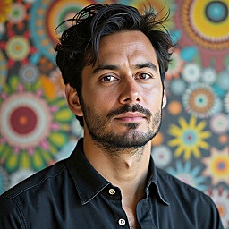
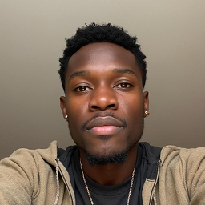

3
Overdue
Increasing
2
At Risk
SLA breach
4
Unassigned
expected
Live Map
Signals
Priority
Status
In Area:
Connector DamageRamat Gan • Bialik St.

Nearest, 15m awayLow workload
Prevent SLA Breach
Connector DamageRamat Gan • Jabotinsky St.
SLA expires in 45m and no tech is on it. Michel is 11m out, clear of the Geha slowdown.
Cluster
2 open incidents, 1.7 km apart
Ramat Gan • Arlozorov St. and Aluf Sadeh Rd.
Ramat Gan • Arlozorov St. and Aluf Sadeh Rd.
Low Coverage In Ramat Gan
Ramat Gan drops to 1 tech at 16:00
Technicians5
Available Now
Ahmad Radjuan

Michel Mesoniv
Available Soon
Roman Belich

Noa Peretz
Claud Garbini
Jobs
Priority
Connector Damage
Overdue by 45m

On site ETA: 3.5h
Ramat Gan • Bialik St.
Add to assist (1)
Ahmad Radjuan
6m away • Available
Signal Lost
Overdue by 56m
On site ETA: -
Givatayim • Weizmann St.
Reassign technician
Ahmad Radjuan
9m away • Available
Signal Degradation
Overdue by 15m
On site ETA: 1.2h
Tel Aviv • Allenby St.
Add to assist (1)
Michel Mesoniv
14m away • Available
Connector Damage
Expires in 45m
En route ETA: 35m
Ramat Gan • Jabotinsky St.
Reassign technician (2)
Michel Mesoniv
11m away • Available
Fiber Cut
Delayed by 25m
En route 25m
Ra'anana • Ahuza St.
Adjust schedule if needed
1 upcoming job may be delayed
Signal Degradation
Unassigned
Ramat Gan • Arlozorov St.
Assign technician (2)
Ahmad Radjuan
8m away • Available
Power Outage at Cabinet
Unassigned
Tel Aviv • Ibn Gvirol St.
Assign technician (2)
Michel Mesoniv
12m away • Available
Water in Underground Fiber
Unassigned
Ramat Gan • Aluf Sadeh Rd.
Assign technician (1)
Claud Garbini
Free in 35m • 6m away
Fiber Cut
Unassigned
Bnei Brak • Hashomer St.
No move available
Every tech is on a job or outside the zone until 16:00. No safe reassignment - this one is yours.
Aerial Cable Down
In Progress

On site ETA: 5.5h
Petah Tikva • Rothschild St.
Splitter Failure
In Progress

On site ETA: 2.2h
Bnei Brak • Rabbi Akiva St.
Water in Underground Fiber
En route 35m away
En route 35m
Ramat Gan • Krinitzi St.
Connector Damage
En route 12m away
En route 12m
Givatayim • Katznelson St.
Fiber Cut
Scheduled
Starts 3 JunScheduled
Kfar Saba • Weizmann St.
ONT Not Responding
Scheduled
Starts 3 JunScheduled
Herzliya • Sokolov St.
Fiber Cut
Scheduled
Starts 5 JunScheduled
Givatayim • Sirkin St.
Conduit Damage
Scheduled
Starts 4 JunScheduled
Petah Tikva • Jabotinsky Rd.